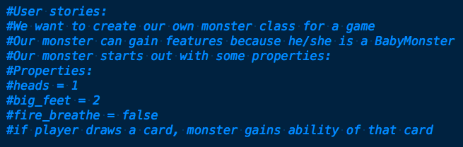
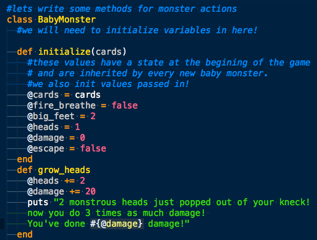
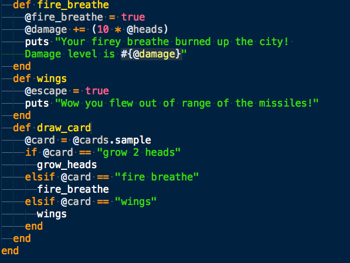
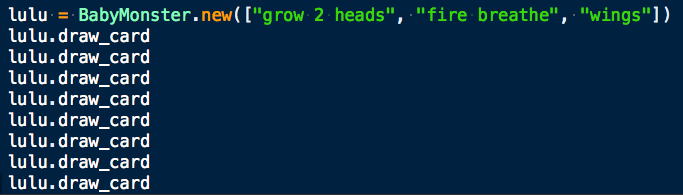

Instant-ly Variables
why and how to make use an @instance variable
Why?!
We use instance variable to give our object state
We modify the state of only or instance of BabyMonster "Lulu", when we call a method on "Lulu"
Our state is not mutable outside our class
Our instance variables are accessible within in any method in our class, yay!
Our instance state is not viewable outside our class unless we define a class that reveals it
Do you want your bank account info available outside your account login? say on the homepage?
Step 1. User stories/brainstorm a class
Properties of our object that we would like to log are instance variables
Properties that we would like to change are instance variables
Step 2. Make some methods for our class
 Step 3. Call our instance "Lulu" with method
Terminal output:
What happens if we don't initialize our cards array?
Even though we are passing cards array in, we still gota initialize it. Otherwise our functions don't know what to do with it.
What happens if you don't initialize a variable with '@'
Oh nils!#*^%!
We get a domino effect of undefined variables
Our method grow_heads no longer knows what 'heads' means it's a nil class!
What if we try to access a variable outside the class?
Instance variables protect the mutability of objects outside the class
Access is restricted to method calls that are written to access and modify variables!
Whew! Safe!
hell-no you can't mess up my variables!
Review:
Ruby's instance variables are never public
Two different objects, even if they belong to the same class, are allowed to have different values for their instance variables.
From outside the object, instance variables cannot be altered or even observed
Posted by: Shakrah Yves Date: 8/2/14